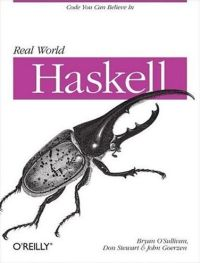

Welcome to Real World Haskell
This is the online home of the book “Real World Haskell”. It is published by O'Reilly Media. The first edition was released in November 2008.
We make the content freely available online. If you like it, please buy a copy.
For news updates, please visit our blog.
Buy online
For your convenience, we have included links to the book through sellers in several countries.
- O'Reilly (USA, UK)
- Powell's Books (USA)
- Amazon (USA)
- Amazon (Deutschland)
- Amazon (Canada)
- Amazon (UK)
What's that creature on the cover?
The illustration on our cover is of a Hercules beetle. These beetles are among the largest in the world. They are also, in proportion to their size, the strongest animals on Earth, able to lift up to 850 times their own weight. Needless to say, we like the association with a creature that has such a high power-to-weight ratio.
What is Haskell?
Here is a description of the Haskell language from the Haskell web site, with links to chapters from our book and to other sites.
Haskell is an advanced purely functional programming language. The product of more than twenty years of cutting edge research, it allows rapid development of robust, concise, correct software. With strong support for integration with other languages, built-in concurrency and parallelism, debuggers, profilers, rich libraries and an active community, Haskell makes it easier to produce flexible, maintainable high-quality software.
 Want to stay
up to date? Subscribe to comment feeds for any chapter, or
the
Want to stay
up to date? Subscribe to comment feeds for any chapter, or
the